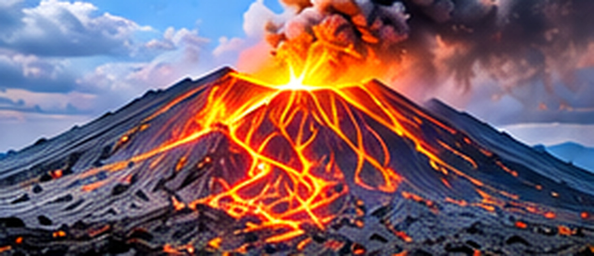
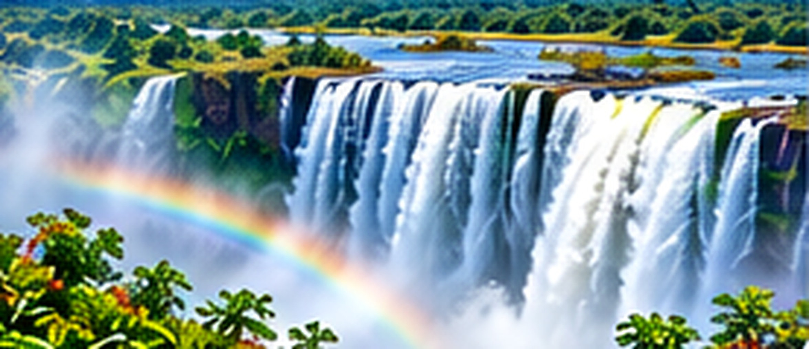

Географія · 7 клас
10 інтерактивних уроків за темами § 15–27 · листопад–грудень
Досліджуйте, аналізуйте, аргументуйте висновки

§ 15-16
Вертикальна поясність. Азональні комплекси. Водні масиСимулятор · тест · відкрита відповідь · PDF

§ 17-18
Кількість і густота населення. Природні чинники розселенняСимулятор · тест · відкрита відповідь · PDF

§ 19-20
Природні чинники у формуванні цивілізаційСимулятор · тест · відкрита відповідь · PDF

§ 21
Африка. Географічне положення і берегова лініяСимулятор · тест · відкрита відповідь · PDF

§ 22
Африка. Тектонічна будоваСимулятор · тест · відкрита відповідь · PDF

§ 23
Африка. Рельєф і корисні копалиниСимулятор · тест · відкрита відповідь · PDF

§ 24
Африка. Загальні риси кліматуСимулятор · тест · відкрита відповідь · PDF
§ 25
Африка. Води суходолуСимулятор · тест · відкрита відповідь · PDF

§ 26
Африка. Природні зониСимулятор · тест · відкрита відповідь · PDF

§ 27
Африка. Населення та екологічні проблемиСимулятор · тест · відкрита відповідь · PDF
Симуляції навчальні та спрощені; вони не замінюють географічні карти або наукові моделі.